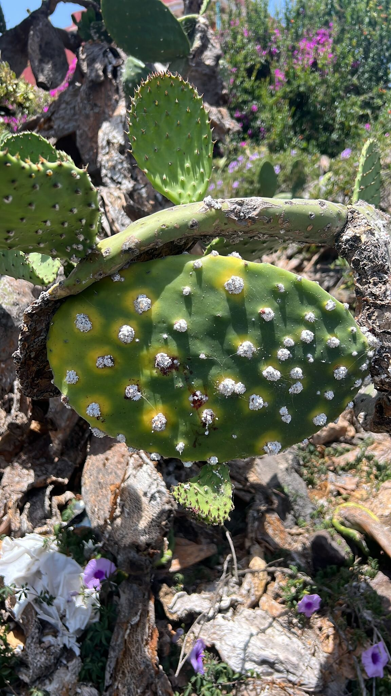
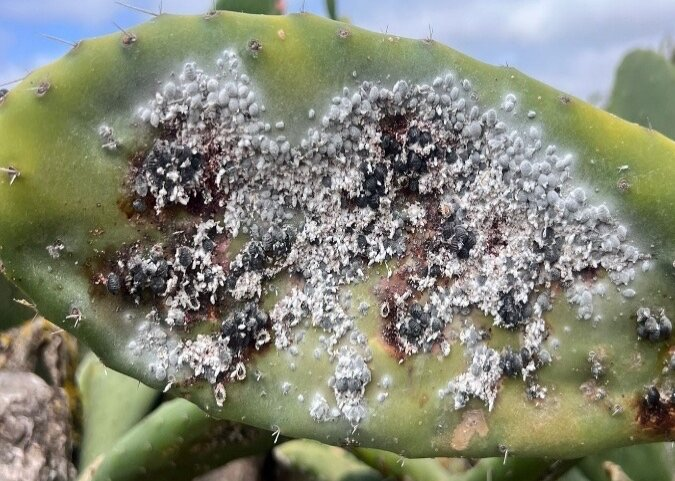
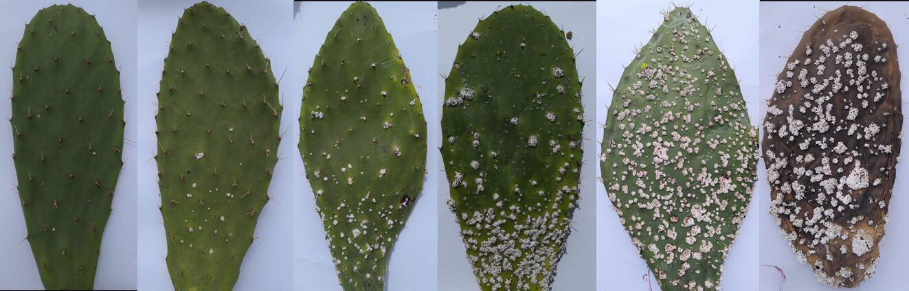
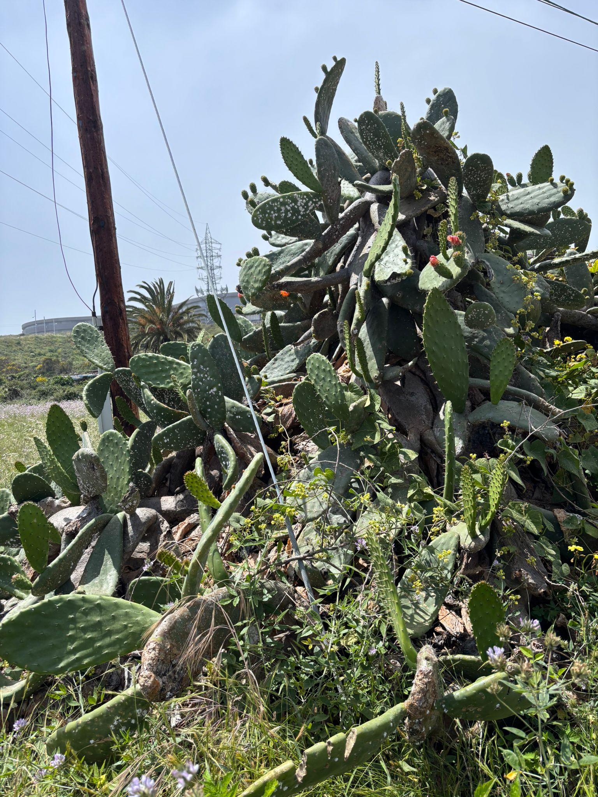
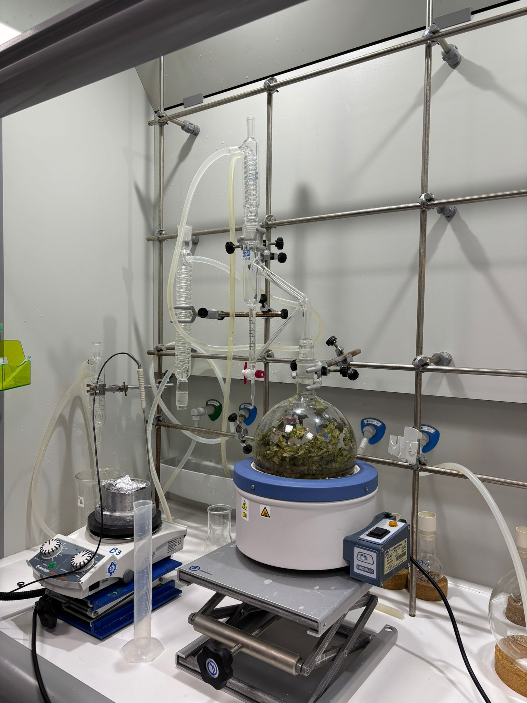
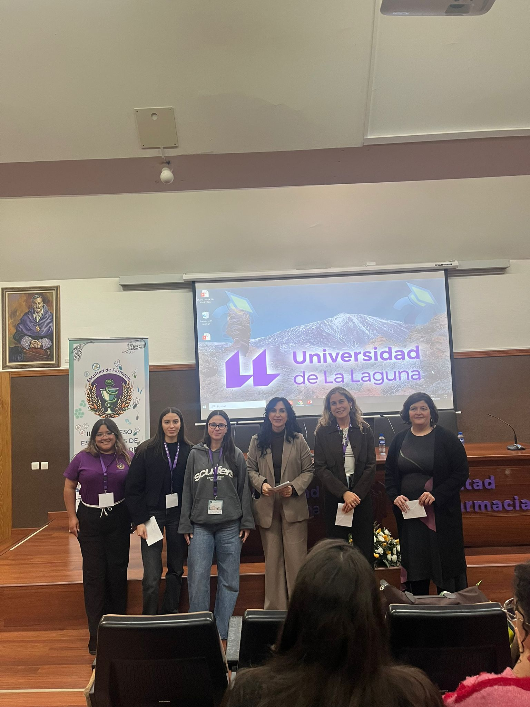
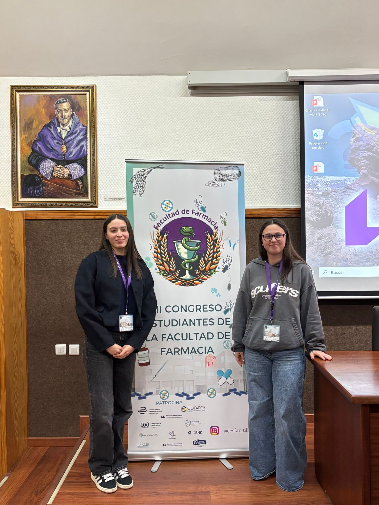
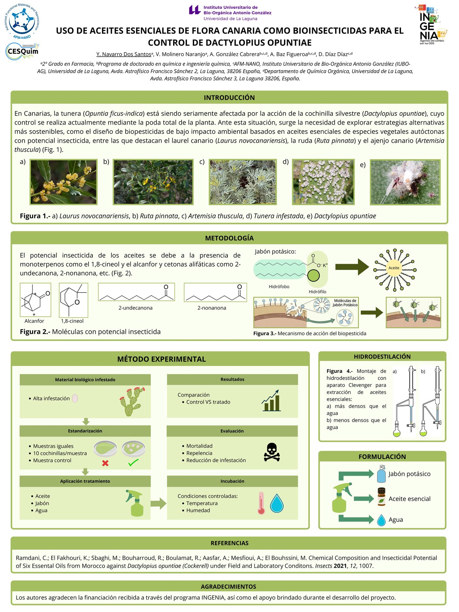

Laurel canario
Laurus novocanariensis
Rico en monoterpenos como el 1,8-cineol, con potencial repelente e insecticida documentado.
Aceites esenciales de la flora canaria como bio-solución frente a la cochinilla silvestre Dactylopius opuntiae.
El reto
En Canarias, la tunera (Opuntia ficus-indica) forma parte del paisaje, la memoria agrícola y la cultura de las islas. Hoy una plaga la pone en jaque: la cochinilla silvestre Dactylopius opuntiae, que se alimenta de la planta y la debilita hasta provocar su muerte.
El método actual de control consiste en la poda total de la planta. Es una solución agresiva, costosa y poco sostenible.




La propuesta
Limpilla investiga el potencial insecticida de los aceites esenciales de plantas autóctonas canarias. La idea es sencilla y poderosa: si el problema viene del campo, la solución también puede salir de él.
Laurus novocanariensis
Rico en monoterpenos como el 1,8-cineol, con potencial repelente e insecticida documentado.
Ruta pinnata
Endemismo macaronésico cuyos aceites contienen cetonas alifáticas (2-undecanona, 2-nonanona).
Artemisia thuscula
Aromática tradicional canaria, con alcanfor y compuestos volátiles de interés bioinsecticida.
Cómo trabajamos

Selección de material vegetal autóctono y de tuneras infestadas con alta carga de cochinilla.
Extracción de los aceites esenciales mediante un aparato Clevenger, separando fracciones más densas y menos densas que el agua.
Mezcla del aceite esencial con jabón potásico y agua, aprovechando la doble naturaleza hidrófila/hidrófoba para que el principio activo alcance al insecto.
Tratamiento sobre muestras estandarizadas (10 cochinillas/muestra) con grupo control. Se evalúa mortalidad, repelencia y reducción de la infestación bajo condiciones controladas.
El equipo
El proyecto reúne a estudiantes de Farmacia, doctorandos e investigadores del Instituto Universitario de Bio-Orgánica Antonio González (IUBO-AG) y del Departamento de Química Orgánica de la Universidad de La Laguna.


Materiales
Vídeos de presentación y el cartel científico que resume la investigación.

Síguenos
Compartimos día a día los avances del laboratorio, salidas de campo y resultados del proyecto en @proyectolimpilla.
Seguir en InstagramLos autores agradecen la financiación recibida a través del programa INGENIA y el apoyo brindado durante el desarrollo del proyecto por la Universidad de La Laguna y el IUBO-AG.